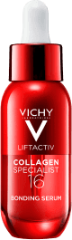
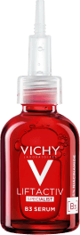
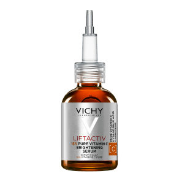
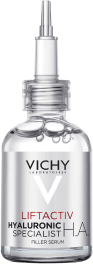

Zdrowie to podstawa. Zacznij od skóry.

Marka dermokosmetyczna najcześciej polecana przez dermatologów w Polsce przeciw starzeniu* *Badanie rynku dermokosmetyków z udziałem dermatologów w Polsce, AplusA, I-IV 2024
REWOLUCYJNE ODKRYCIE NAUKOWCÓW VICHY
Wzmocnij kolageny w skórze. Zredukuj 16 oznak starzenia* z serum Vichy Liftactiv Collagen 16.
*Wyniki badań klinicznych, intstrumentalnych i samooceny
REZULTATY POTWiERDZONE KLINICZNIE*
PO - tydzień 12
84% kobiet zauważyło redukcję zmarszczek**
*Symulacja efektów osiągniętych w badaniu klinicznym, 53 kobiety, 12 tygodni.
**Test konsumencki, 53 osoby, 8 tygodni.
16 KOLAGENÓW NA OZNAK STARZENIA*
koloryt skóry
zmarszczki
drobne linie
ujędrnienie
efekt wypełnienia
wiotkość
wygładzenie
struktura skóry
sprężystość
gęstość
wzmocnienie
regeneracja
blask
miękkość
elastyczność
nawilżenie

PRZED

PO
*Wyniki badań klinicznych, intstrumentalnych i samooceny
Co-Bonding - Technologia wiązania Kolagenów
Aby zwiększyć produkcję kolagenu, zastosowano trzy aktywne składniki - Peptydy, Ramnozę i Maitake - które razem tworzą technologię Co-bonding, wspierającą i łączącą różne typy kolagenu.
Stworzona z myślą
o skórze wrażliwej
Nieklejąca konsystencja
szybko się wchłania
WYBIERZ SERUM DOPASOWANE DO TWOICH POTRZEB
PRZEBARWIENIA, ODNOWA KOMÓRKOWA

Liftactiv
Collagen Specialist 16
Serum
WYPEŁNIENIE DROBNYCH LINII, NAWILŻANIE, ROZŚWIETLENIE

Liftactiv
Pigment Specialist B3
Dark Spots Serum
Utrata kolagenu w skórze, oznaki starzenia.
Przebarwienia, niejednolity koloryt skóry, zmarszczki.
Redukuje 16 oznak
starzenia skóry*.
*Wyniki badań klinicznych, instrumentalnych i
samooceny.
Redukuje przebarwienia, redukuje zmarszczki, wyrównuje koloryt.
Delikatna, aksamitna konsystencja, która szybko się wchłania w skórę. Nie pozostawia tłustego filmu.
Lekka, beztłuszczowa formuła, szybko się wchłania.
REDUKCJA ZMARSZCZEK, WYRÓWNANIE KOLORYTU

Liftactiv
16% Pure Vitamin C
Brightening Serum
REAKTYWACJA SKÓRY

Liftactiv
H.A. Epidermic Filler
Szarość i zmęczenie skóry, zmarszczki, oznaki starzenia.
Delikatne linie i zmarszczki, oznaki starzenia.
Rozświetla, wygładza strukturę skóry, nadaje efekt ujędrnienia, redukuje drobne zmarszczki.
Wypełnia kontur twarzy i oczu. Stopniowo redukuje zmarszczki i drobne linie.
Bezzapachowa, nietłusta, nieklejaca się formuła. Nie wybłyszcza skóry.
Lekka, płynna formuła, szybko się wchłania.

PRZEBARWIENIA, ODNOWA KOMÓRKOWA
Liftactiv
Collagen Specialist 16
Serum
WYPEŁNIENIE DROBNYCH LINII, NAWILŻANIE, ROZŚWIETLENIE
Liftactiv
Pigment Specialist B3
Dark Spots Serum
REDUKCJA ZMARSZCZEK, WYRÓWNANIE KOLORYTU
Liftactiv
16% Pure Vitamin C
Brightening Serum
REAKTYWACJA SKÓRY
Liftactiv
H.A. Epidermic Filler
Utrata kolagenu w skórze, oznaki starzenia.
Przebarwienia, niejednolity koloryt skóry, zmarszczki.
Szarość i zmęczenie skóry, zmarszczki, oznaki starzenia.
Delikatne linie i zmarszczki, oznaki starzenia.
Redukuje 16 oznak
starzenia skóry*.
* Wyniki badań klinicznych,
instrumentalnych i samooceny.
Redukuje przebarwienia, redukuje zmarszczki, wyrównuje koloryt.
Rozświetla, wygładza strukturę skóry, nadaje efekt ujędrnienia, redukuje drobne zmarszczki.
Wypełnia kontur twarzy i oczu. Stopniowo redukuje zmarszczki i drobne linie.
Delikatna, aksamitna konsystencja, która szybko się wchłania w skórę. Nie pozostawia tłustego filmu.
Lekka, beztłuszczowa formuła, szybko się wchłania.
Bezzapachowa, nietłusta, nieklejaca się formuła. Nie wybłyszcza skóry.
Lekka, płynna formuła, szybko się wchłania.
POZNAJ PIELĘGNACJĘ REDUKUJĄCĄ 16 OZNAK STARZENIA*
krok
1serum
krok
2Krem na dzień
krok
3Krem pod oczy
*Wyniki badań klinicznych, instrumentalnych i samooceny.
PIELĘGNACJA ANTI-AGING
CZĘSTO ZADAWANE PYTANIA
Co to jest kolagen i jak działa?
Kolagen jest jednym z najbardziej powszechnych białek w skórze. W ludzkim ciele zidentyfikowano co
najmniej 28 typów
kolagenu, z czego 16 w skórze. Odpowiada za zdrowy wygląd, świeżość i strukturę skóry.
Jak często powinnam stosować rutynę pielęgnacyjną Collagen Specialist 16
Rutyna Collagen Specialist 16 jest odpowiednia do codziennej pielęgnacji skóry już od 25 roku życia,
kiedy produkcja
naturalnego kolagenu w skórze maleje. Aby osiągnąć najlepsze rezultaty, stosuj serum rano i wieczorem
na oczyszczoną i
osuszoną twarz. Później, nałóż odpowiedni krem z linii Liftactiv na dzień lub na noc.
Czy istnieje tylko jeden typ kolagenu?
Nie, to powszechny mit. W skórze rozpoznano 16 typów kolagenu tworzących jej unikalną matrycę. Ich
koncentracja jest
największa między 25 a 34 rokiem życia, a później naturalnie spada, dlatego z wiekiem ważne jest
wspieranie ich
wszystkich jednocześnie. Możesz to osiągnąć stosując serum Vichy Collagen Specialist 16, które
wzmacnia skórę z
widocznymi oznakami utraty kolagenu wzmacniając jego produkcję*.
*Test in vitro.